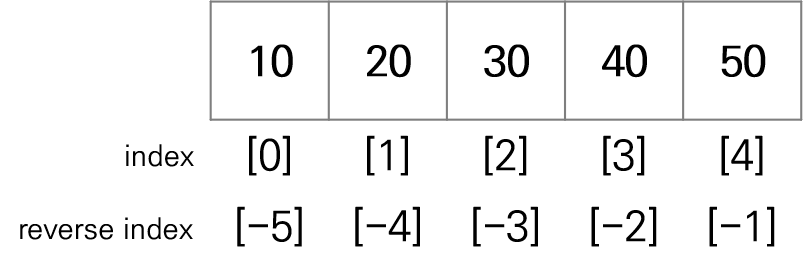

# 리스트 생성1
lst = [1, 2, 3, 4, 5]
print(lst)[1, 2, 3, 4, 5][] 사용하여 리스트를 직접 정의하는 방법[] 안에 요소(element)를 ,로 구분하여 나열함list() 함수를 사용하여 리스트를 생성하는 방법[1, 3.14, 'Hello', True, [11, 12, 13]]+ : 두 리스트를 연결해서 새로운 리스트 생성* : 리스트를 숫자만큼 반복하여 새로운 리스트 생성 - (예) 리스트*숫자[index]를 사용하여 리스트의 특정 위치에 있는 원소에 접근함[(start index):(stop index)]를 사용하여 리스트의 일부 원소를 추출함
list[(start index):(end index)] = iterable를 사용하면 start:end로 지정한 부분이 iterable 객체의 모든 요소로 대체됨
# 리스트 접근 연산자 []를 이중으로 사용할 수 있음
lst = [1, 3.14, "Hello", True, [11, 12, 13]]
print(lst[2])
print(lst[2][0])Hello
H[10, 20, 3, 40, 50][10, 20]
[30, 40, 50]
[10, 30, 50][10, 50][[1, 2, 3], [4, 5, 6, 7], [8, 9]]| 함수 | 설명 |
|---|---|
| append() | - 새로운 값을 기존 리스트의 맨 끝에 추가 |
| extend() | - 새로운 리스트를 기존 리스트에 추가(덧셈 연산과 같은 효과) |
| insert() | - 기존 리스트의 i번째 인덱스에 새로운 값을 추가 - i번째 인덱스를 기준으로 뒤쪽의 인덱스는 하나씩 밀림 |
[1, 2, 3, 4]# 리스트에 여러 개의 요소 추가
lst = [1, 2, 3]
lst.extend([11, 12]) # 실행 결과로 아무것도 출력하지 않음
print(lst) # lst1 원본 값이 변함[1, 2, 3, 11, 12]# extend() 함수와 리스트 연결 연산자 +의 차이
lst1 = [1, 2, 3]
lst2 = [11, 12, 13]
lst1 + lst2 # 실행 결과가 출력됨
print(lst1) # lst1 원본 값이 변하지 않음
print(lst2) # lst2 원본 값이 변하지 않음[1, 2, 3]
[11, 12, 13]| 함수 | 설명 |
|---|---|
| pop() | - 특정 인덱스 값을 삭제하고 그 값을 반환 - 인덱스를 생략하면 마지막 요소를 삭제 |
| del 키워드 | - 특정 인덱스 값을 삭제 - 리스트 객체 자체를 삭제 가능함 |
| remove() | - 리스트에서 첫 번째로 일치하는 값을 삭제 - 값으로 삭제하므로 인덱스를 사용하지 않음 |
| clear() | - 리스트의 모든 요소를 삭제 |
# 특정 인덱스 값 삭제1
lst = [1, 2, 3, 4, 5]
result = lst.pop(3) # 실행 결과로 삭제한 값을 반환
print(lst) # lst 원본 값이 변함
print(result)[1, 2, 3, 5]
4# 특정 인덱스 값 삭제2
lst = [1, 2, 3, 4, 5]
result = lst.pop() # 인덱스를 생략하면 마지막 요소를 삭제 후 반환
print(lst) # lst 원본 값이 변함
print(result)[1, 2, 3, 4]
5[1, 2, 3, 5][1, 2, 3, 5]| 함수 | 설명 |
|---|---|
| reverse() | - 리스트 요소를 역순으로 재배열 |
| sort() | - 리스트 요소를 오름차순(default)으로 정렬 - 내림차순으로 정렬하려면 reverse=True로 설정 |
| 함수 | 설명 |
|---|---|
| count() | 리스트 내부에 특정 값이 몇 번 나타나는지 개수를 반환 |
| index() | 리스트 내부에 특정 값의 첫 번째 인덱스를 반환하며, 없으면 오류 발생 |
| in 연산자 | 리스트 내부에 특정 값이 있다면 True, 없다면 False를 반환 |
| 함수 | 설명 |
|---|---|
| len() | 리스트 요소의 개수(리스트 길이) 반환 |
| sum() | 리스트 요소의 합계 반환 |
| max() | 리스트 요소 중 최대값 반환 |
| min() | 리스트 요소 중 최소값 반환 |
[식 for 변수 in 반복범위 if 조건식]
[x for x in range(10)][0, 1, 2, 3, 4, 5, 6, 7, 8, 9][0, 1, 2, 3, 4, 5, 6, 7, 8, 9]## 짝수만 저장 (필터링, if 문과 함께 사용)
# 일반적인 반복문 + 리스트
result1 = []
for i in range(10):
if i % 2 == 0:
result1.append(i)
print(result1)[0, 2, 4, 6, 8]## 짝수만 저장 (필터링, if 문과 함께 사용)
# 리스트 컴프리헨션
result2 = [i for i in range(10) if i % 2 == 0]
print(result2)[0, 2, 4, 6, 8]## 두 개의 문자열 조합하여 새로운 리스트 생성 (중첨 반복문)
# 일반적인 반복문 + 리스트
word1 = "Hello"
word2 = "World"
result1 = []
for i in word1:
for j in word2:
result1.append(i+j)
print(result1)['HW', 'Ho', 'Hr', 'Hl', 'Hd', 'eW', 'eo', 'er', 'el', 'ed', 'lW', 'lo', 'lr', 'll', 'ld', 'lW', 'lo', 'lr', 'll', 'ld', 'oW', 'oo', 'or', 'ol', 'od']## 두 개의 문자열 조합하여 새로운 리스트 생성 (중첨 반복문)
# 리스트 컴프리헨션
word1 = "Hello"
word2 = "World"
result2 = [i+j for i in word1 for j in word2]
print(result2)['HW', 'Ho', 'Hr', 'Hl', 'Hd', 'eW', 'eo', 'er', 'el', 'ed', 'lW', 'lo', 'lr', 'll', 'ld', 'lW', 'lo', 'lr', 'll', 'ld', 'oW', 'oo', 'or', 'ol', 'od']# 리스트 컴프리헨션 (필터링 + 중첩 반복문)
case1 = ["A", "B", "C"]
case2 = ["D", "E", "A"]
result = [i + j for i in case1 for j in case2 if not(i==j)]
print(result)['AD', 'AE', 'BD', 'BE', 'BA', 'CD', 'CE', 'CA']## 리스트의 각 요소를 대문자, 소문자, 길이로 변환하여 이차원 리스트 생성 (이차원 리스트)
# 일반적인 반복문 + 리스트
words = "The quick brown fox jumps over the lazy dog".split()
word_info1 = []
for w in words:
word_info1.append([w.upper(), w.lower(), len(w)])
word_info1[['THE', 'the', 3],
['QUICK', 'quick', 5],
['BROWN', 'brown', 5],
['FOX', 'fox', 3],
['JUMPS', 'jumps', 5],
['OVER', 'over', 4],
['THE', 'the', 3],
['LAZY', 'lazy', 4],
['DOG', 'dog', 3]]## 리스트의 각 요소를 대문자, 소문자, 길이로 변환하여 이차원 리스트 생성 (이차원 리스트)
# 리스트 컴프리헨션
words = "The quick brown fox jumps over the lazy dog".split()
word_info2 = [[w.upper(), w.lower(), len(w)] for w in words]
word_info2[['THE', 'the', 3],
['QUICK', 'quick', 5],
['BROWN', 'brown', 5],
['FOX', 'fox', 3],
['JUMPS', 'jumps', 5],
['OVER', 'over', 4],
['THE', 'the', 3],
['LAZY', 'lazy', 4],
['DOG', 'dog', 3]]# [주의] 중첩 반복문에서 대괄호의 위치에 따라 리스트의 구조가 달라짐
case1 = ["A", "B", "C"]
case2 = ["1", "2", "3"]
result1 = [i + j for i in case1 for j in case2] # 일차원 리스트, 앞의 for 문이 먼저 실행됨
result2 = [[i + j for i in case1] for j in case2] # 이차원 리스트, 뒤의 for 문이 바깥쪽에서 먼저 실행됨
print(result1)
print(result2)['A1', 'A2', 'A3', 'B1', 'B2', 'B3', 'C1', 'C2', 'C3']
[['A1', 'B1', 'C1'], ['A2', 'B2', 'C2'], ['A3', 'B3', 'C3']]